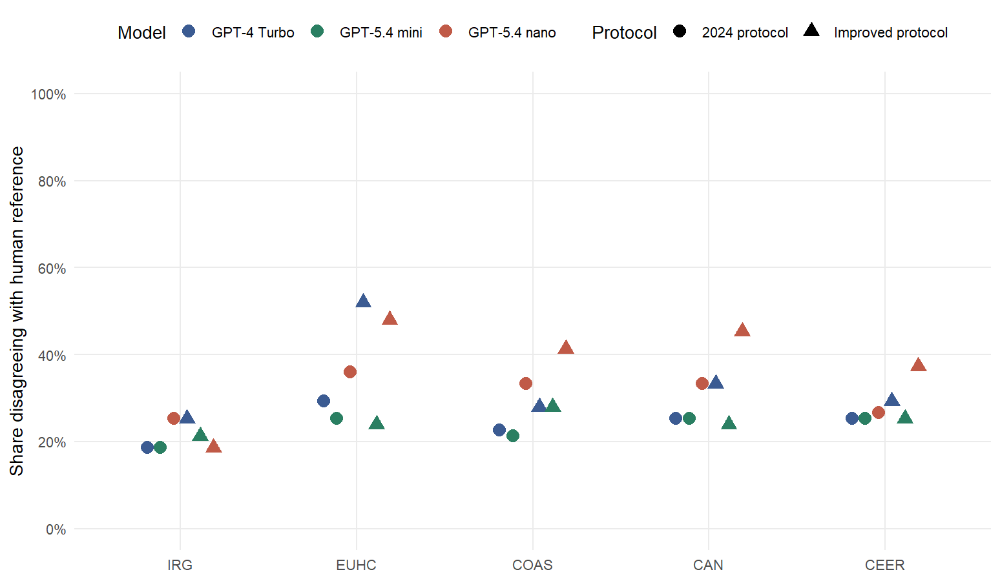
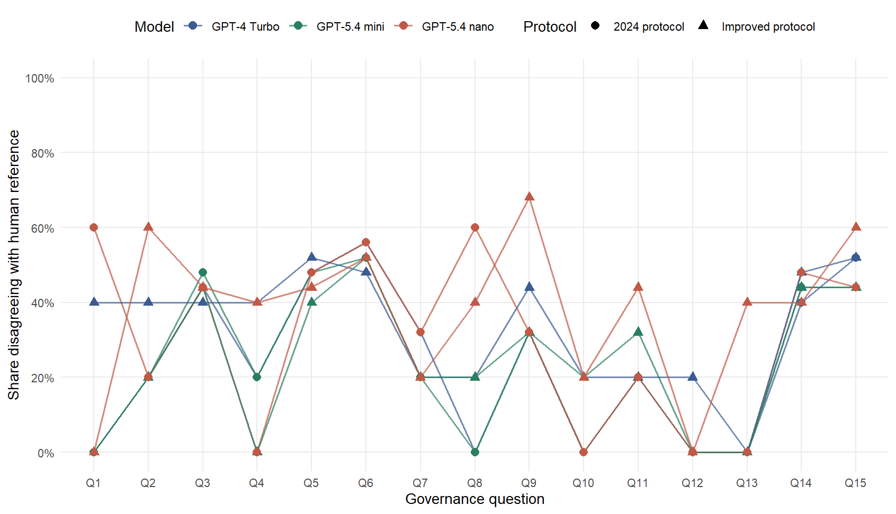

| Model | Protocol | Source |
|---|---|---|
| GPT-4 Turbo | 2024 protocol | Preserved Dec. 24, 2024 output |
| GPT-5.4 nano | 2024 protocol | Retained 2026 run |
| GPT-5.4 mini | 2024 protocol | New 2026 run |
| GPT-4 Turbo | Improved protocol | New improved-protocol run |
| GPT-5.4 nano | Improved protocol | New improved-protocol run |
| GPT-5.4 mini | Improved protocol | New improved-protocol run |
Six-Scenario Comparison
Model generation × protocol under zero-shot governance coding
Design
The analysis is zero-shot only and uses a 3 × 2 model-by-protocol design: three model arms under the preserved 2024 protocol and the improved protocol. The same five PONs—IRG, EUHC, COAS, CAN, and CEER—and the same 15 questions are evaluated in every cell.
Note
The historical calls record the alias gpt-4-turbo, not the returned snapshot ID. The improved-protocol rerun uses the pinned gpt-4-turbo-2024-04-09 snapshot as the closest reproducible counterpart. This improves reproducibility but cannot prove byte-for-byte identity with the model that served the 2024 alias.
Why the improved protocol is better
The improved prompt is intentionally short. It keeps the same documents, 15 questions, zero-shot design, Chat Completions endpoint, and system/user message roles. The substantive treatment is the instruction text; the improved runs also use the same documented 500-token operational output cap.
- Evidence boundary: use only the supplied document.
- Decision rule: return TRUE only when the document explicitly supports the proposition; otherwise FALSE.
- Inference boundary: do not import outside knowledge or infer unstated rules.
- Output contract: return exactly one ordered
question_id,responserow per question.
This makes the coding threshold and serialization contract explicit without adding examples, chain-of-thought instructions, or a structured-output API parameter.
Performance against the human reference
| Model | Protocol | Decisions | Accuracy | Precision | Recall | Specificity | F1 |
|---|---|---|---|---|---|---|---|
| GPT-4 Turbo | 2024 protocol | 375 | 75.7% | 84.3% | 85.7% | 36.0% | 85.0% |
| GPT-4 Turbo | Improved protocol | 375 | 66.4% | 86.2% | 69.0% | 56.0% | 76.7% |
| GPT-5.4 mini | 2024 protocol | 375 | 76.8% | 83.8% | 88.0% | 32.0% | 85.9% |
| GPT-5.4 mini | Improved protocol | 375 | 75.5% | 83.5% | 86.3% | 32.0% | 84.9% |
| GPT-5.4 nano | 2024 protocol | 375 | 69.1% | 82.9% | 77.3% | 36.0% | 80.0% |
| GPT-5.4 nano | Improved protocol | 375 | 61.9% | 83.4% | 65.3% | 48.0% | 73.3% |
Question: Which combinations of model and protocol produce the smallest share of disagreements with the human reference, and are the gains consistent across PONs?

The disagreement rate is shown rather than a raw error count so each point conveys the relative weight of errors in the 15-question coding vector.
Protocol and model effects
| PON | Model | 2024 protocol | Improved protocol | Change |
|---|---|---|---|---|
| CAN | GPT-4 Turbo | 74.7% | 66.7% | -8.0% |
| CAN | GPT-5.4 mini | 74.7% | 76.0% | 1.3% |
| CAN | GPT-5.4 nano | 66.7% | 54.7% | -12.0% |
| CEER | GPT-4 Turbo | 74.7% | 70.7% | -4.0% |
| CEER | GPT-5.4 mini | 74.7% | 74.7% | 0.0% |
| CEER | GPT-5.4 nano | 73.3% | 62.7% | -10.7% |
| COAS | GPT-4 Turbo | 77.3% | 72.0% | -5.3% |
| COAS | GPT-5.4 mini | 78.7% | 72.0% | -6.7% |
| COAS | GPT-5.4 nano | 66.7% | 58.7% | -8.0% |
| EUHC | GPT-4 Turbo | 70.7% | 48.0% | -22.7% |
| EUHC | GPT-5.4 mini | 74.7% | 76.0% | 1.3% |
| EUHC | GPT-5.4 nano | 64.0% | 52.0% | -12.0% |
| IRG | GPT-4 Turbo | 81.3% | 74.7% | -6.7% |
| IRG | GPT-5.4 mini | 81.3% | 78.7% | -2.7% |
| IRG | GPT-5.4 nano | 74.7% | 81.3% | 6.7% |
| PON | Protocol | GPT-4 Turbo | GPT-5.4 nano | GPT-5.4 mini | Nano − Turbo | Mini − Turbo | Mini − Nano |
|---|---|---|---|---|---|---|---|
| CAN | 2024 protocol | 74.7% | 66.7% | 74.7% | -8.0% | 0.0% | 8.0% |
| CAN | Improved protocol | 66.7% | 54.7% | 76.0% | -12.0% | 9.3% | 21.3% |
| CEER | 2024 protocol | 74.7% | 73.3% | 74.7% | -1.3% | 0.0% | 1.3% |
| CEER | Improved protocol | 70.7% | 62.7% | 74.7% | -8.0% | 4.0% | 12.0% |
| COAS | 2024 protocol | 77.3% | 66.7% | 78.7% | -10.7% | 1.3% | 12.0% |
| COAS | Improved protocol | 72.0% | 58.7% | 72.0% | -13.3% | 0.0% | 13.3% |
| EUHC | 2024 protocol | 70.7% | 64.0% | 74.7% | -6.7% | 4.0% | 10.7% |
| EUHC | Improved protocol | 48.0% | 52.0% | 76.0% | 4.0% | 28.0% | 24.0% |
| IRG | 2024 protocol | 81.3% | 74.7% | 81.3% | -6.7% | 0.0% | 6.7% |
| IRG | Improved protocol | 74.7% | 81.3% | 78.7% | 6.7% | 4.0% | -2.7% |
Question-level behavior
Question: Which governance questions remain difficult across models and protocols, and which problems appear to be prompt-sensitive?

| Model | Protocol | TRUE | FALSE | TRUE share |
|---|---|---|---|---|
| GPT-4 Turbo | 2024 protocol | 305 | 70 | 81.3% |
| GPT-4 Turbo | Improved protocol | 240 | 135 | 64.0% |
| GPT-5.4 mini | 2024 protocol | 315 | 60 | 84.0% |
| GPT-5.4 mini | Improved protocol | 310 | 65 | 82.7% |
| GPT-5.4 nano | 2024 protocol | 280 | 95 | 74.7% |
| GPT-5.4 nano | Improved protocol | 235 | 140 | 62.7% |
A large shift in TRUE prevalence is worth checking because it can indicate that a protocol or model changes the effective evidentiary threshold rather than merely reshuffling isolated classifications.
Model-generation stability
With three model arms, stability is reported pairwise within each protocol. This shows whether the improved protocol makes model choice less consequential and whether GPT-5.4 mini behaves more like GPT-5.4 nano or GPT-4 Turbo.
| Protocol | Model pair | Decisions | Same | Changed | Agreement |
|---|---|---|---|---|---|
| 2024 protocol | GPT-4 Turbo vs GPT-5.4 mini | 75 | 65 | 10 | 86.7% |
| 2024 protocol | GPT-4 Turbo vs GPT-5.4 nano | 75 | 60 | 15 | 80.0% |
| 2024 protocol | GPT-5.4 nano vs GPT-5.4 mini | 75 | 60 | 15 | 80.0% |
| Improved protocol | GPT-4 Turbo vs GPT-5.4 mini | 75 | 57 | 18 | 76.0% |
| Improved protocol | GPT-4 Turbo vs GPT-5.4 nano | 75 | 48 | 27 | 64.0% |
| Improved protocol | GPT-5.4 nano vs GPT-5.4 mini | 75 | 50 | 25 | 66.7% |
Run-integrity diagnostics
WarningOutput-format anomalies detected
6 of 25 newly generated output files contain a flagged serialization irregularity. A file is scored only when exactly 15 binary responses are recoverable.
| File | Recovered | Concatenated boundaries | Standard header | First line |
|---|---|---|---|---|
| BO2A_irg_z.txt | 15 | 0 | TRUE | question,TRUE_OR_FALSE |
| BO6A_ceer_z.txt | 15 | 0 | FALSE | Question,CEER Statutes as of 25 October 2023: Articles of Association (Consolidated 25 Oct 2023) |
| BO3A_euhc_z.txt | 15 | 0 | FALSE | header |
| BO4A_coas_z.txt | 15 | 0 | FALSE | header |
| BO5A_can_z.txt | 15 | 0 | FALSE | header |
| BO6A_ceer_z.txt | 15 | 0 | FALSE | header |
Interpretation boundary
Human-reference disagreement is disagreement with the recovered computational reference, not definitive evidence that a model is substantively wrong. Likewise, higher model-generation agreement is stability, not correctness. The design is most informative when both quantities are examined together.